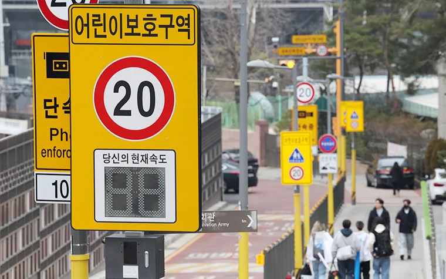

▲ 어린이보호구역에서는 제한속도 시속 30km를 넘기는 순간부터 과태료가 부과된다 ⓒ LandAndTree, Wikimedia Commons (CC0)
"설마 몇 킬로 넘었다고 그렇게 많이 나오겠어." 스쿨존에서 과속 단속에 걸린 운전자들이 흔히 하는 착각입니다. 하지만 실제 고지서를 받아보면 생각보다 금액이 크다는 걸 알게 됩니다. 어린이보호구역에서 승용차 기준 속도위반 과태료는 20km/h 이하 초과 시 7만원부터 시작해 60km/h를 넘기면 16만원까지 올라갑니다. 신호위반은 무인단속 기준 13만원으로, 일반 도로 신호위반 과태료 7만원의 약 2배 수준입니다. 여기에 어린이 사고까지 발생하면 이른바 '민식이법'에 따라 형사처벌까지 더해집니다. 무인 카메라는 사정을 봐주지 않습니다. "몰랐다"는 변명이 통하지 않는 이유입니다.
1. 속도위반, 구간마다 왜 이렇게 차이 날까

▲ 어린이보호구역에는 단속카메라 안내와 함께 실시간 속도 표시 전광판이 설치돼 운전자에게 즉각 경고한다
어린이보호구역의 기본 제한속도는 시속 30km입니다. 이를 초과한 정도에 따라 과태료·범칙금·벌점이 계단식으로 커집니다.
| 초과 속도 | 과태료(무인단속) | 벌점(현장단속) |
|---|---|---|
| 20km/h 이하 | 7만원 | 15점 |
| 20~40km/h | 10만원 | 30점 |
| 40~60km/h | 13만원 | 60점 |
| 60km/h 초과 | 16만원 | 120점 (면허 정지·취소 수준) |
무인 카메라로 적발되면 차량 소유주에게 과태료만 부과되고 벌점은 없지만, 그렇다고 금액 자체가 줄어드는 것은 아닙니다. 최근에는 일부 스쿨존 이면도로의 제한속도를 시속 30km에서 20km로 더 낮추는 지자체도 늘고 있어, 같은 도로라도 예전 기준으로 운전하다가는 초과 구간이 한 단계씩 올라갈 수 있습니다.
2. 신호위반과 민식이법, 진짜 무서운 건 따로 있다

▲ 실시간 속도 표시 전광판은 제한속도 준수를 유도하지만, 신호위반은 이런 경고 없이 곧바로 단속된다
속도위반보다 체감 금액이 더 크게 느껴지는 항목은 신호위반입니다. 어린이보호구역 내 신호위반은 무인단속 기준 과태료 13만원, 현장단속 기준 범칙금 12만원에 벌점 30점이 부과되는데, 이는 일반 도로 신호위반 과태료 7만원의 약 2배에 이릅니다. 이 가중 기준은 오전 8시부터 오후 8시까지 요일이나 공휴일 구분 없이 동일하게 적용됩니다. 등하교 시간대만 조심하면 된다고 생각하기 쉽지만, 실제로는 하루 12시간 내내 가중처벌 대상이라는 뜻입니다.